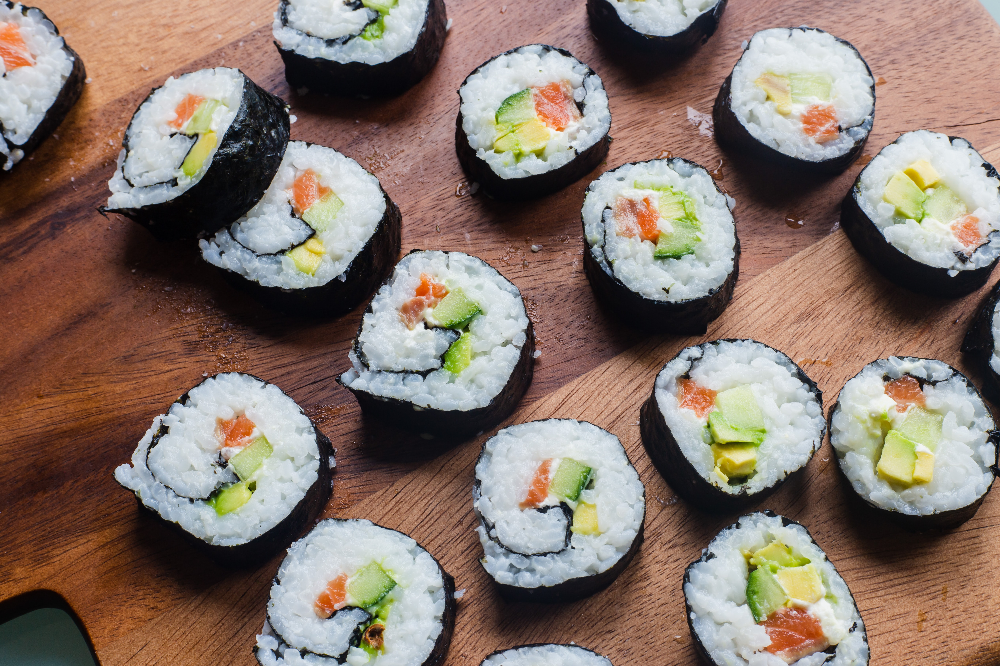

Sushi recipe

Description
Here is my recipe for the perfect sushi rice. You can eat this alone or roll into your favorite sushi roll with ingredients of choice. I use strips of carrots, cucumbers and slices of avocado. You can adjust the amount of vinegar in this recipe to suit your taste.
Ingredients
- 2 cups of uncooked glutinous white rice (sushi rice)
- 3 cups of water
- Half a cup of rice vinegar
- 1 tablespoon of vegetable oil
- Half a cup of white sugar
- 1 teaspoon salt
Steps
- Rinse the rice in a strainer or colander until the water runs clear. Combine with water in a medium saucepan. Bring to a boil, then reduce the heat to low, cover and cook for 20 minutes. Rice should be tender and water should be absorbed. Cool until cool enough to handle.
- In a small saucepan, combine the rice vinegar, oil, sugar and salt. Cook over medium heat until the sugar dissolves. Cool, then stir into the cooked rice. When you pour this in to the rice it will seem very wet. Keep stirring and the rice will dry as it cools.